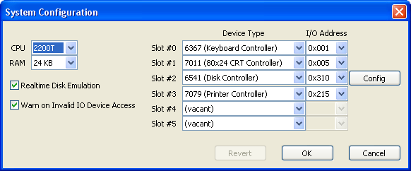
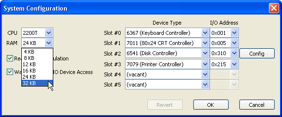
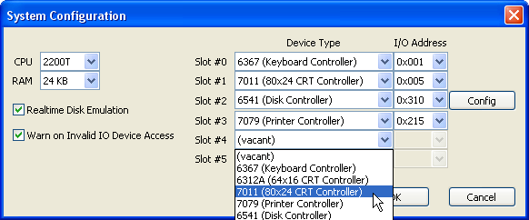
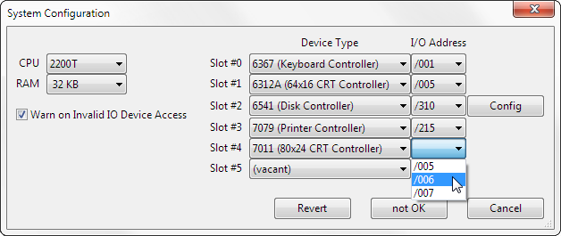
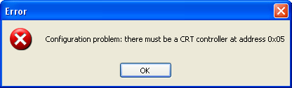
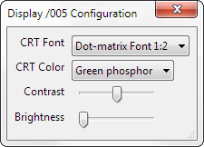
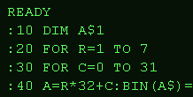
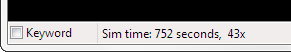

WangEmu Configuration Options
Introduction
The Wang emulator can be configured to emulate various system configurations. There are five categories of items:
- CPU configuration
- I/O configuration
- CRT configuration
- Printer Configuration
- Miscellaneous configuration
Upon start of the emulator, a file, named wangemu.ini is read to determine how the system should be configured. The file is located in the same directory as the emulator executable. During operation, the user can change the various configuration options, and all are saved back to the wangemu.ini file when the user closes the program. This file is a straight text file and can be viewed and modified by any text editor, although it is all too easy to corrupt the file. It is best to just use the emulator to change options.
The first time the program is run, or if it can't locate wangemu.ini, or if the file exists but has errors, a warning message is produced.

In this case the emulator is given a default configuration, consisting of:
- 2200T CPU
- 32 KB RAM
- one keyboard at I/O address 01
- one 64x16 display controller at I/O address 05
- one intelligent disk controller at I/O address 10
- one printer controller at I/O address 15
In all cases below that show the "System Configuration" dialog, there will be three buttons:
- Revert
- OK
- Cancel
When the dialog first opens, the Revert button will be grayed out and all options shown will reflect the present configuration. When you make your selections, the emulator is actually not affected until the OK button is pressed. If you decide you don't want to change the configuration, you can either hit the Cancel button or press the standard close window button in the title bar of the dialog. Alternately, you can click the Revert button to change the configuration settings back to match the present configuration and start changing from there.
CPU Configuration
The most significant variable is selecting which CPU to emulate. The first Wang 2200 systems used the 2200A, 2200B, 2200C, 2200S, or 2200T CPUs. The differences between these were mostly the amount of microcode. The emulator currently supports the 2200B and 2200T microcode sets.
The 2200 VP (and later models) used a number of different implementations of the VP microarchitecture but were largely the same. Select this for 2200 VP emulation running Wang BASIC-2. Note that the VP series didn't have BASIC in ROM and instead required a boot disk containing the BASIC microcode. For VP emulation the system must have at least on disk controller in order to load microcode. For MVP emulation, the CPU must be either the MVP-C or the MicroVP, and a 2236 MXD terminal mux must be chosen (see later).
To configure how much RAM the machine has, from the top level menu pick "Configure", then the submenu "Configure System...". You should see a window that looks something like this one:

Click on the pull-down list item labeled "RAM" and pick how much RAM you'd like your system to have:

The RAM size options shown above are all the ones valid for a real 2200T CPU. When the emulator is configured with a 2200 VP CPU, the RAM choices are different to reflect what was valid for that system.
I/O Configuration
The system emulated has six I/O slots. What gets plugged into each slot is up to the user. Just like a real 2200, slots are completely symmetric, meaning that any card can be plugged into any available slot.
Currently, there are only five types of I/O cards emulated:
- keyboard controller
- display controller (64x16)
- display controller (80x24)
- disk controller
- printer controller
In real life, most cards could be assigned to just about any address, but certain addresses were the preferred for a given device type to reduce system configuration troubles. Also, certain devices had to be present at certain I/O addresses, since at power up, the microcode expected an input device at address 01 and an output address at 05.
Select "Configure/Configure System..." from the top-level menu and you'll get this dialog:
For each of the slots, you can pick one of the available card types. For example, here's how to add an 80x24 display controller:

A card can be removed from a slot by selecting the "(vacant)" device type for the slot.
After selecting the new device, the I/O address of the card will still need to be assigned. Click on the pull-down list for the I/O address for the slot just modified; in this example,

After making changes, either accept them by pressing the OK button, or cancel your actions by pressing the Cancel button. Optionally, you can abort your changes and start over by pressing the Revert button.
If you press OK and there is something wrong with the configuration you've set up, you'll get one of the following warning messages explaining what is wrong. The first two are self explanatory:


If you add a card to a slot but forget to assign an I/O address, you'll see an error similar to the following message:

If you assign the same address to two devices, you'll see a message like this one:

As the configuration is edited, the dialog constantly checks if the configuration makes sense. If it doesn't, the middle confirmation button will read "Not OK", and clicking it will produce one of the error messages just presented. If the configuration is legal, the middle confirmation button will read either "OK" if the change can be made without rebooting the emulated system (e.g., changing whether or not the disk timing is emulated as realtime), or "OK, Reboot" if the change is more significant (e.g., adding or removing a card).

Disk Configuration
If there is a disk controller present, the System Configuration dialog will include a "Config" button to the right of the slot containing the disk controller. Clicking that button will bring up another dialog to set the details of that disk controller.

Number of drives
The first part of the dialog is simple enough. Each disk controller can control up to four disk drives. If the base address of the disk controller is, say, /310, then the first drive is F/310, the second drive is R/310, the third is F/350, and the fourth is R/350. This is standard Wang BASIC behavior.
Controller Type
The second section, Controller Type, requires more explanation. For the first generation machines, which used Wang BASIC, the disk controller was "dumb", meaning it had a limit low level command capability, and it could handle only single platter disks of up to 32K sectors. Wang BASIC-2 added the ability to address multi-platter disks, and could address up to 64K sectors per platter. This required an "intelligent" disk controller, and it also came with some new disk channel commands, such as format disk (for ease of use) and multi-sector disk-to-disk copy (to help performance).
In almost all cases, it is best to just pick the Intelligent disk controller. When running in 2200B or 2200T mode the intelligent disk controller behaves like a dumb disk controller, so there no down side. When running in VP mode and using large disk (more than one platter or more than 32K sectors) the disk controller must be intelligent, so there is no choice.
There is one obscure case where you might want to pick the dumb mode. As was stated, Wang BASIC could address only 32K sectors. The disk catalog and certain parts of the file structure contain 16 bit fields to hold a sector address. Since only 15 bits of this was needed to hold the sector address, for some unknown reason Wang BASIC will clear bit 15 to 0 if the disk in is the F drive, and will set bit 15 to 1 if it is in the R drive. Wang BASIC ignores this bit when reading back the disk later, so no harm done. The difficulty comes when you use one of these disks with an intelligent disk controller. The intelligent disk controller does not ignore bit 15, and so unexpected things can happen. One option is to manually set the controller to be dumb when handling these kinds of disks.
Warn on mismatch
The third section of the dialog should normally always be left selected. If the disk controller is in dumb mode and a large format disk is "inserted" into a virtual drive, a warning will be generated indicating that this is probably not what you desire, since most of the disk will not be accessible to the dumb controller. Likewise, if a small disk is inserted into a virtual drive with an intelligent controller, the emulator checks for the problem mentioned in the previous paragraph. If the problem exists, a warning is produced, with an option for the emulator to rewrite the virtual disk image with all the extranious bit 15's cleared.
CRT Configuration
The appearance of the CRT portion of the emulation is controlled via the "Display Configuration" dialog. This dialog is invoked via the "Configure/Configure Screen..." menu. The dialog is shown here.

When selections are made on this dialog, the change is immediately reflected in the emulated CRT display.
CRT Font
The emulator can use a few different font sizes using the system Courier font. This produces easy reading text but it has some drawbacks. One drawback is that the original Wang font had characters that the system's Courier font doesn't support or has only very rough equivalents for. More importantly, part of the fun of emulation is trying to be authentic as possible. To that end, the dot matrix font used in WangEmu was obtained by reading the character generator ROM from a real Wang 7011 CRT controller.
| 
System Courier, 12 point |

Wang Dot Matrix, 1:2 Scaling |
The Display menu can be used to choose whatever font size appeals most to the user. After changing the font size, it is likely that the user will need to resize the CRT window to better match the emulated display size. Note too that the emulator maintains separate font choices for when the emulator is in fullscreen mode and not; the dialog changes only the selection for the current mode.
CRT Color
The default color scheme chosen for the Wang emulator is bright green on very dark green. This most closely matches the look of the Wang CRT display. However, the user can also change to use either the "white" or "blue" color schemes. The "blue" scheme seems like an unlikely choice, except that it is quite readable, and there was an early Wang brochure with a mocked up display that used that color scheme.
Here is what the three look like together:

green phosphor |

white phosphor |
white on blue |
Contrast/Brightness
The sliders on the Display Configuration dialog roughly emulate the contrast/brightness controls of an original Wang terminal.
Miscellaneous Configuration
There are a few configuration choices that don't fall into one of the broad categories above.
Some of the configuration state is implicitly controlled. Just about all of the windows and dialogs of the emulator retain their size and position between invocations. The Wang emulator also maintains the most recent directory where a text script file was read, where a screen capture was most recently saved, where a virtual disk image was located, and where printer output was saved.
Keyword Mode
The Wang 2226 keyboard had two modes of operation, controlled by a toggle lever on the left side of the keyboard. In "A/a" mode, the keyboard acted much like a typewriter. Shifted keys produced capital letters and unshifted keys produce lower case letters. If the mode switch was set to "Keyword/A" mode, shifted keys produced keywords (e.g., "PRINT " and "FOR "), while unshifted keys produced capital letters.
WangEmu supports 2226 keyboard emulation via a checkbox in the lower left corner of the CRT display. The two modes are shown here:
Checking the box causes shifted letters to produce keywords and unshifted letters to produce their capital letter. Another way to toggle the state is to select the "Configure/Keyword mode" menu item, or to use the keyboard sequence Alt-K.

SF key toolbar
This item is a toggle that enables or disables the display of a toolbar on the CRT window. The toolbar contains a graphical depiction of the 16 special function keys plus the EDIT key. This toolbar is especially useful on the Mac platform because the function keys aren't all available nor do they work in concert with the shift key.
Here is what the top of the CRT window looks like without a toolbar:

and here is what it looks like with the toolbar enabled:

There are 16 special function keys; holding down the shift key while clicking on one of the buttons produces the Wang special function keys 16 to 31. Some of the buttons have a label above the special function key number, just like a real Wang keyboard. These show the effect that the keys have in EDIT mode.
If the window is emulating a serial terminal (that is, it is connected to a 2236 MXD terminal mux), the toolbar will look slightly different, as a few more special function keys have had EDIT actions assigned to them.

Fullscreen Mode
WangEmu normally runs in a window frame of a size chosen by the user. The user may make the window as big or small as desired and WangEmu will remember this. No matter how large or small, though, this frame will always have a title bar, a menu bar, a status bar, and left and right frame margins.
By selecting the "Configure/Fullscreen" menu item, or by using the keyboard shortcut Alt-Enter, WangEmu will toggle into and out of fullscreen mode. Fullscreen mode is where the program will take over the whole computer screen. It is different than a maximized window in that there is no title bar, no status bar, and no left and right margins. This mode allows maximum use of screen real estate and comes closes to emulating a real 2200 CRT. Because the fullscreen vs. normal sized window are likely to have very different sizes, WangEmu maintains separate font style preferences for these two modes.
Logically this option should live in the Display Configuration dialog, but since it is likely to be changed more often than those other CRT-related options, it has been made more accessible to the user.
Statistics
This dialog allows user control of whether or not emulation performance statistics appear in the status bar of the CRT frame.

For example, the statusbar above indicates that 752 emulated seconds of CPU time had elapsed since the beginning of the simulation and that the emulation was running at 43 times the speed of an actual Wang 2200.
Enable/Disable Warnings About Accesses to Unpopulated I/O Addresses
The Wang I/O structure supports 255 unique I/O addresses (address 0x00 is reserved to mean "address nothing.") Programs can arbitrarily attempt to perform I/O on any of these addresses. Because the emulator supports a limited number of I/O devices or may be configured differently from the expectations of a running program, the emulator will by default warn when a program selects an address that doesn't have a device at the address.
Whether to warn or not is controlled globally by the flag on the System Configuration menu, shown highlighted below.

The first time a given non-existent device is addressed, the following warning will appear. The user is given an option to ignore any further complaints about that address, or to continue receiving them. This suppression exists until the next time the emulator is started.

Keyboard Tieing
This topic is an obscure corner case, so feel free to skip it unless you have an unusual configuration with multiple 6367 keyboard controllers.
Although probably 99.9% of the Wang 2200's were used with a single keyboard (that is, until the MVP came out), there was nothing to prevent a person from plugging multiple keyboard controllers into one CPU. WangEmu also allows it. However, that presents a problem, as a PC is even more likely than an old 2200 to have a single keyboard. WangEmu solves this by allowing the user to specify where keystrokes directed to a given CRT screen should map to in the range of keyboard addresses.
If the system is configured to have a single keyboard, then the emulator assumes all keystrokes are to go to the single keyboard controller (which must, be necessity, be at address 01), and the top level Configure menu list looks like this:
However, say two keyboards are configured for the system, at I/O addresses 01 and 02. The top level Configure menu changes to look like this:

By selecting "Tie to /0nn", any keys typed while the window has focus will be caught by the keyboard controller emulation at I/O address nn. It is possible to have the input from one CRT to go to any of N different keyboards, and it is also possible for N different CRT windows to get mapped to a single keyboard controller, or anything in between.